Released: August 17, 2011
Next Release: August 24, 2011
U.S. Oil Rig Count Passes 1,000
On June 24, 2011, the Baker Hughes weekly count of rigs actively drilling for oil in the United States was 1,003, marking the first week since the company began separating oil and natural gas rig counts in 1987 that the 1,000 count threshold for oil-targeted rigs was surpassed. The weekly count increased steadily through the end of July, reaching 1,025 on July 29.
The rig count is an important indicator of exploration and development activity for both oil and natural gas. Historically, drilling for each resource has tracked price changes, although with some lag. Average monthly oil rig counts began falling within a few months after crude oil prices (WTI spot) dropped from an average of nearly $135 per barrel in June 2008 to less than $40 per barrel in February 2009. The rig count started to bounce back shortly after average monthly crude prices began rising again in March 2009, and has yet to stop. July 2011 was the twenty-sixth consecutive month in which the average oil rig count increased (Figure 1).
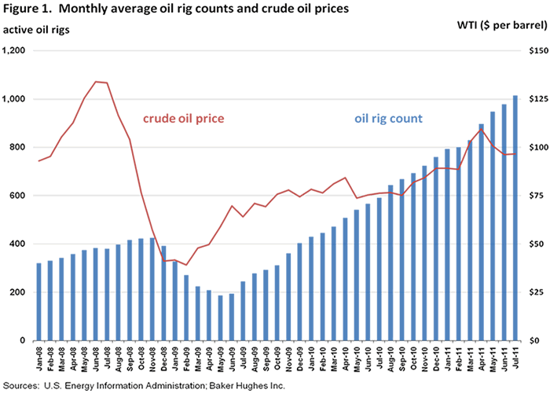
Steady increases in the monthly oil rig count since mid-2009 reflect operators' expanding drilling programs in both long-established and emerging areas. The vertical oil rig count, more reflective of conventional drilling activity, has nearly quadrupled since falling to an average of 115 rigs in June 2009, one-half of the average vertical count in November 2008. The increase in the horizontal rig count, an effective gauge of unconventional drilling in liquids-rich portions of several of the Nation's shale formations, has been even more pronounced. After declining by nearly two-thirds from November 2008 to May 2009, the number of horizontally-directed oil rigs has grown nearly ten-fold (Figure 2).
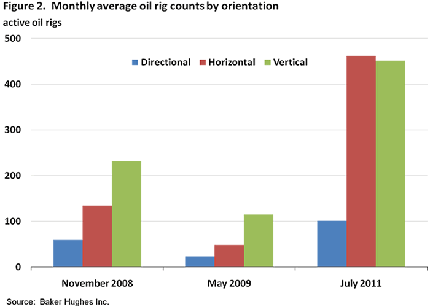
Sustained high oil prices have spurred drilling activity across much of the country's oil producing regions, as can be seen by examining oil rig counts by geologic basin (Figure 3). Expanding conventional drilling is especially evident in average monthly rig counts for the Permian Basin in Texas and New Mexico, which have risen nearly six-fold since May 2009. Increasing unconventional drilling activity is demonstrated in average monthly oil rig counts for the Western Gulf Basin in Texas (site of the Eagle Ford Shale) and the Williston Basin in Montana and North Dakota (location of the Bakken Shale). The Western Gulf Basin count rose from 11 in May 2009 to 162 in July 2011, while the Williston Basin count more than quadrupled over the same period.
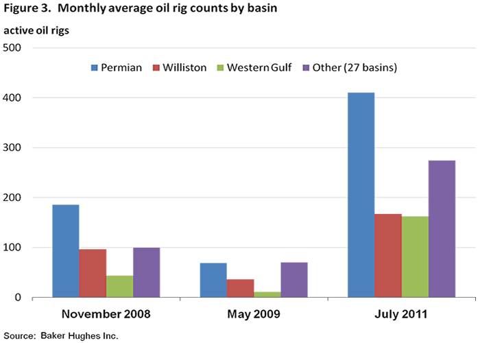
The rising number of active oil rigs has generated generally steady increases in U.S. oil production. In November 2008, U.S. oil production averaged just over 5 million barrels per day (bbl/d). While average monthly production volumes had risen to about 5.4 million bbl/d at the rig count's low point in May 2009, much of the increase was from the Federal Offshore Gulf of Mexico (GOM), where oil rig counts generally rose, notably in the GOM's highly productive deepwater areas. Total U.S. oil production averaged over 5.6 million bbl/d in March 2011, the most recent month for which on- and offshore data are available. With GOM production generally declining from the levels seen in the second half of 2009, the more recent production increases are mostly attributable to Lower-48 onshore exploration and development efforts, particularly horizontal drilling programs in the Bakken and other U.S. shale formations (Figure 4).
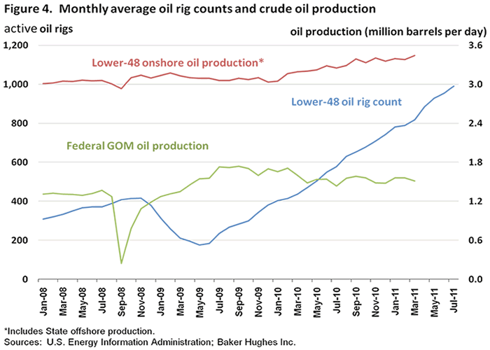
Gasoline and diesel prices drop again
The U.S. average retail price of regular gasoline fell for the second week in a row, losing seven cents to reach $3.60 per gallon. The average price is $0.86 per gallon higher than last year at this time. The Midwest continued to post the largest decrease as the price was down more than eight cents on the week. The Gulf Coast remains the least expensive region, falling almost seven cents to put the price at $3.49 per gallon. The average price on the East Coast lost just over seven cents from last week, while the West Coast average was down about a nickel with an average price of $3.69 per gallon. The Rocky Mountain region tallied the smallest decrease of just under three cents a gallon.
The national average diesel price decreased for the third consecutive week, falling over six cents to $3.84 per gallon. The diesel price is $0.86 per gallon higher than last year at this time. The West Coast led declines for the third week, losing almost nine cents per gallon. The East Coast average declined about seven cents per gallon while the Midwest and Gulf Coast average diesel prices dropped around six cents per gallon. The Rocky Mountains had the smallest decrease at two and a half cents per gallon.
Propane inventories continue seasonal build at a slower pace than last year
Although total U.S. inventories of propane continued to build for the last 17 weeks, stocks have still lagged behind the year-ago level by 9.4 million barrels or 16 percent. Last week, propane stocks posted a modest increase of 0.8 million barrels to end at 50.4 million barrels. All regions showed a build in stocks last week except for the East Coast region where stocks remained at previous week's level of 4.1 million barrels. The bulk of the gain occurred in the Gulf Coast region with 0.5 million barrels of new propane stocks, followed by the Midwest region (0.2 million barrels) and the Rocky Mountain/West Coast (0.1 million barrels). Propylene non-fuel use inventories represented 4.8 percent of total propane inventories.
Text from the previous editions of This Week In Petroleum is accessible through a link at the top right-hand corner of this page.
| 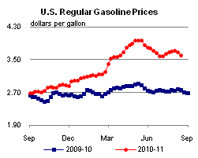 | 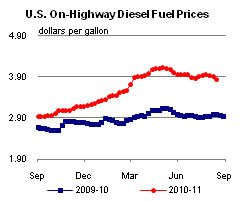 | ||||||
| Retail Data | Changes From | Retail Data | Changes From | ||||
| 08/15/11 | Week | Year | 08/15/11 | Week | Year | ||
| Gasoline | 3.604 | Diesel Fuel | 3.835 | ||||
| 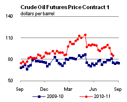 | 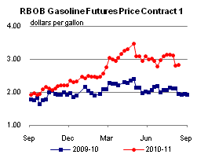 | ||||||||||||||||||||||||||
|
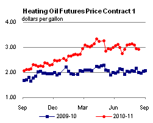 | ||||||||||||||||||||||||||
| *Note: Crude Oil Price in Dollars per Barrel. | |||||||||||||||||||||||||||
| 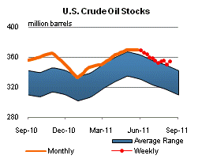 | 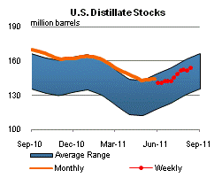 | ||||||
| 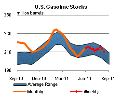 | 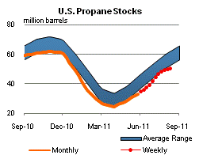 | ||||||
| Stocks Data | Changes From | Stocks Data | Changes From | ||||
| 08/12/11 | Week | Year | 08/12/11 | Week | Year | ||
| Crude Oil | 354.0 | Distillate | 154.0 | ||||
| Gasoline | 210.1 | Propane | 50.382 | ||||